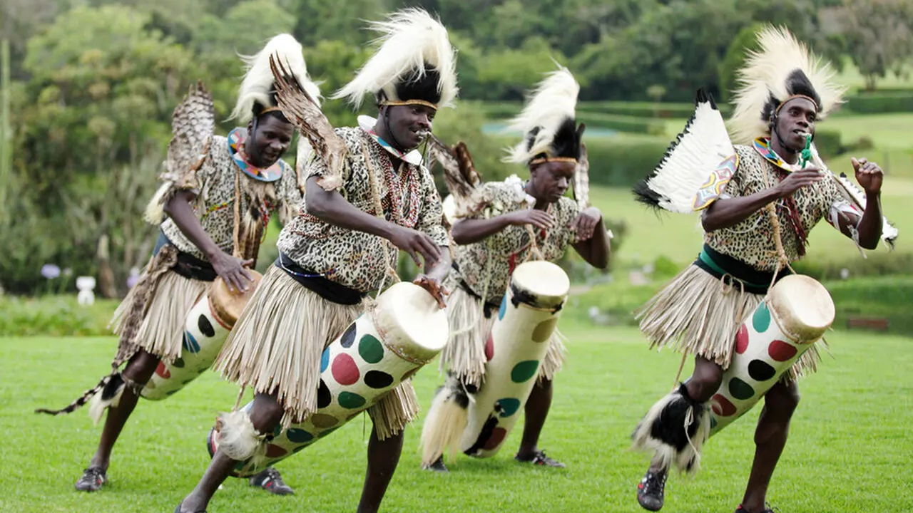
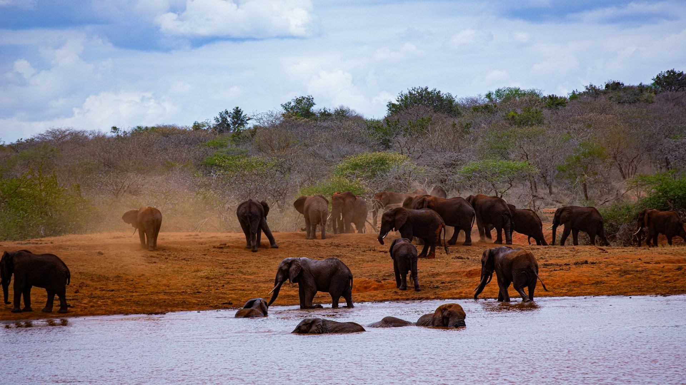
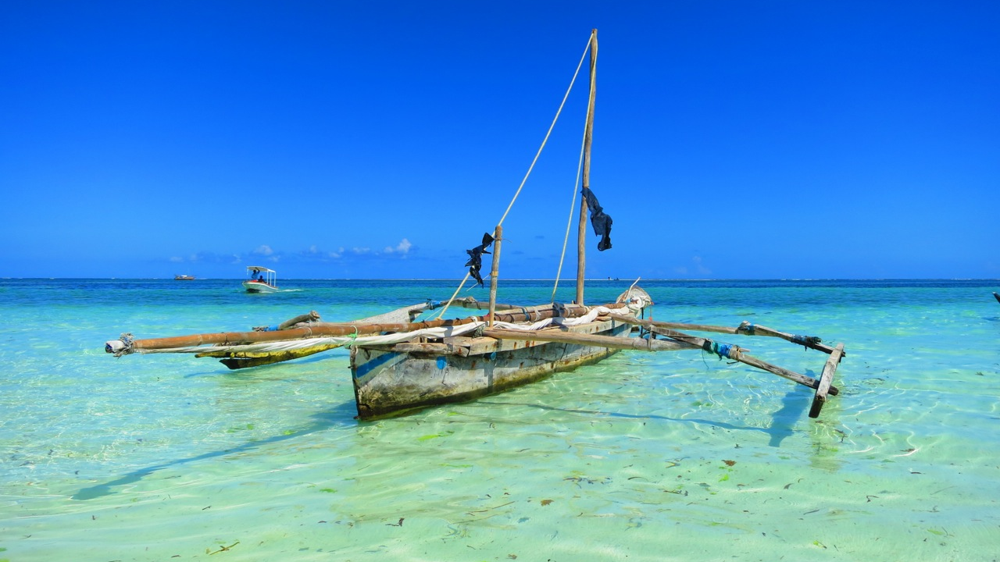

Dlaczego warto odwiedzić Kenię?


Kenia jest krajem o niezwykłej urodzie, a jej wschodnie wybrzeże zachwyca. Wybrzeże Oceanu Indyjskiego oferuje niezapomniane widoki. Złote plaże, turkusowe wody przyciągają podróżników z całego świata. Region wschodni jest domem dla rozległych parków narodowych, takich jak Park Narodowy Tsavo, gdzie można spotkać słonie, lwy, żyrafy i wiele innych dzikich zwierząt. W Kenii można z bliska obserwować afrykańską faunę oraz odkrywać fascynującą kulturę i historię.
Lokalne rytuały
W Kenii istnieją głęboko zakorzenione tradycje skupione wokół różnych ceremonii oraz obrzędów plemiennych, szczególnie u ludów Masajów i Samburu. Kluczowe są ceremonie eunoto celebrujące dorosłość. Ceremonie obejmują tańce, słynne skoki, pieśni i skaknie na jednej nodze. Kultura spożywania mleka z krwią jest częścią tradycyjnej diety. Rytuały odgrywają dużą rolę w przekazywaniu wiedzy i wartości społecznych.

Informacje ogólne
W Keni wymagana jest e-TA - jest to wiza pod nową nazwą. Ważna jest 3 miesiące, więc należy składać wnioski jak najszbyciej, aby uniknąć stresu. Formalności należy dopełnić przed podróżą, wyłącznie drogą elektroniczną https://www.etakenya.go.ke/en. Dokumentem podróży jest paszport, ważny minimum sześć miesięcy. Do Kenii należy zabrać dolary nie starsze niż 2009. Starszych nikt nie przyjmie.
Safari w Tsavo East

Jeden z największych i najstarszych parków w Kenii, znany z otwartych sawann i ogromnych stad słoni, które przybierają czerwony odcień od tutejszej ziemi. Zapora Aruba Dan przyciąga liczne zwierzęta w porze suchej. Rzeka Galana przepływa przez park zapewniając wodopój. Można tam spotkać również lwy w tym słynne "ludożercy" z Tsavo, gepardy, bawoły, żyrafy, zebry, antylopy, hipopotamy.
Funzi Island
Wyspa Funzi to osada w hrabstwie Kwale w Kenii. Fuzni skada się z czterech wysp porośniętych namożynami. Na wyspie jest jedna wioska z członkami plemienia z Hirazi. Jest to miejsce gdzie można zobaczyć krokodyle oraz ptaki. Można tutaj zakupić lokalne speciały np. olejki z kokosa, chusty i inne rękodzieła. Rejs po lesie namożynowym jest niesamowitym doświadczeniem.

Shimba Hills
Głowne atrakcje turystyczne to spektakularne wodospady Sheldricka, które oferują niezapomniane widoki i możliwość ochłody w upalne dni. Warto również odwiedzić punkt widokowy Elephant Hill, skąd rozciąga się zapierający dech w piersiach widok na okoliczne doliny i lasy. Jest to ukryty klejnot Kenii zachwycający dziką przyrodą. Park jest domem dla słoni leśnych które są znacznie mniejsze od ich kuzynów z sawanny.